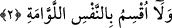

için getirilmiştir. Başına geldiği şeyi güçlendirmek için gelen “lâ” harfi -aslında
olumsuz anlamına gelmekle birlikte- olumsuzluk ifâde etmez. Nitekim şâir şöyle der:
Leylâyı hatırladım, sardı benliğimi bir ateş
Kalbim parçalanacaktı az kalsın, oldum Mecnûn’a eş!
Bu şiirin metninde “kalbim parçalanacaktı, şeklinde tercüme edilen kısım -âyette
olduğu gibi- “lâ yenkatıu/parçalanmayacaktı” şeklinde olumsuz biçimde yer almaktadır.
Ancak âyette olduğu gibi burada da “lâ” harfi olumsuzluk değil, “pekiştirme” ifâde
etmektedir.
Bir başka görüşe göre âyetteki “lâ” olumsuzluk ifâde etmektedir. Ancak bu olumsuzluk
yeminle ilgili değil, kendisinden haber verilen şeyle ilgilidir. Bir başka ifâdeyle üzerine
yemin edilen hususu; büyük bir gün olacağını vurgulamak içindir. Sanki şöyle denmiş
olmaktadır: Ben kıyâmet günü üzerine yemin etmiyorum, bu yeminimle kıyâmet gününün
büyüklüğünü gereği şekilde yüceltmiş olmuyorum. Çünkü kıyâmet günü bundan daha
fazlasına lâyıktır.
Bir üçüncü görüşe göre ise âyetteki “lâ” yeminden önceki cümleyi olumsuz yapmak ve
reddetmek için gelmiştir. Bu son takdire göre ifâde sanki şöyledir: Kâfirler öldükten
sonra dirilmeyi inkâr etmişler ve kendilerine: “La/hayır, durum böyle değil” denilmiş
ardından: “Kıyâmet gününe yemin ederimki...” şeklinde devam edilmiştir. Bu tıpkı şu
ifâde gibidir: “Hayır, vallahi öldükten sonra dirilme haktır”
Hangisi takdir olunursa olunsun kıyâmet günü öldükten sonra dirilmenin gerçekliği
üzerine yapılan yeminlerde daha fazla söze gerek kalmayacak kadar bir ifâde gücü
vardır.
Bâzı âlimlerin yaptıkları ve “buradaki lâ yemini olumsuz hâle çevirmektedir. Çünkü
kıyâmet günü öldükten sonra dirilmek gâyet açık olarak bellidir” şeklindeki tefsirleri
üzerine yemin edilen nesnenin -burada kıyâmet- belli olması ve onun şânının
yüceltilmesi dolayısıyla ifâdeye uygun düşmüyor.
Muğiyre b. Şu’be (rh.) der ki: “Kıyâmet, kıyâmet diyorlar oysa herkesin kıyâmeti
kendi ölümüdür.” Alkame günlerden bir gün bir cenazeye katılır, cenaze toprağa
verilince: “İşte bu adamın kıyâmeti koptu” der. Nitekim bu anlamda şâirin biri şöyle
der:
Dünyadan çıktım, koptu kıyâmetim
Taşındı cenazem, erken bitti seyâhatim!
2. Kendini kınayan (pişmanlık duyan) nefse yemin ederim (diriltilip hesaba
çekileceksiniz).